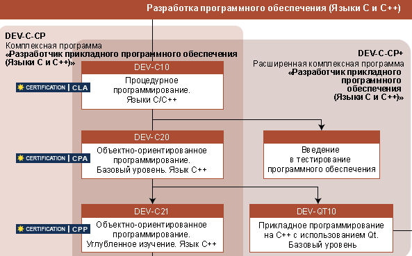
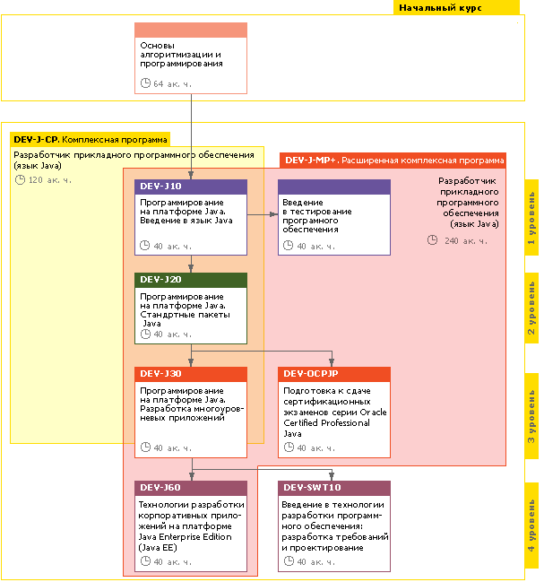

- Курсы С/С++
Курсы Си в Школе Практического Программирования предназначены для получения теоретических знаний и практических навыков, необходимых для работы C++ программистом. Умение программировать на С/С++ также неразрывно связано с программированием для встроенных применений и системами реального времени.
В связи с появлением новой версии стандарта языка С++11 (ранее известного как С++0x) в предлагаемый для изучения материал курсов были добавлены новые понятия, которые коснулись не только ядра языка, но и расширения стандартной библиотеки.
Каждый из предлагаемых курсов C++ сопровождается авторскими учебными пособиями, которые предназначаются для использования в качестве конспектов лекций, что в значительной степени освобождает слушателей от механической работы, позволяя сосредоточиться на содержательной части.
Программа обучения включает в себя разнообразные курсы C++. Для успешного обучения по данному направлению мы рекомендуем определенную последовательность в изучении материала.

- Платформа .NET

.NET Framework - это платформа для разработки и развертывания различных типов приложений с использованием единых стандартов и библиотек. Такой подход к разработке программного обеспечения (ПО) позволяет упростить процесс обучения специалистов, сократить время ввода нового участника в проект, эффективно использовать накопленные специалистами знания, опыт и разработанные ранее компоненты.
Создание .NET приложений возможно на любом .NET Framework-совместимом языке программирования, но на сегодняшний момент в большинстве случаев используется язык программирования C#. Такой выбор во многом обусловлен тем, что язык C# создан компанией Microsoft специально для платформы .NET и унаследовал все лучшее от С++, Java и других объектно-ориентированных языков.
В рамках данного направления мы предлагаем Вам пройти обучение на авторизованных курсах Microsoft (MOC).
Авторизованные курсы созданы командой высококвалифицированных специалистов, по заказу и под контролем вендера. Обучение по предложенным программам обучения позволит слушателям в кратчайшие сроки получить знания и навыки необходимые для разработки различных типов ПО и эффективно использовать взаимосвязанные .NET технологий — ADO.NET, ASP.NET, XML Web-службы .NET Remoting, WPF.
Программы обучения ориентированы на подготовку квалифицированных программистов и разработчиков различного уровня и являются эффективным средством подготовки к сертификационным экзаменам компании Microsoft. Большое количество авторизованных курсов, разнообразных по длительности и интенсивности, позволяет сформировать удобные график и программу обучения для специалистов с разными задачами и целями.
Лабораторные работы в учебных курсах (около 50% от общего времени обучения) составлены с учетом официальных рекомендаций и нотаций вендера. Слушатели авторизованных курсов учатся не просто решать поставленные задачи, а делать это максимально эффективно и просто.
- Курсы Java

Курсы Java, проводимые в нашем учебном центре предназначены для получения теоретических знаний и практических навыков по программированию на языке Java. что является необходимых для работы Java-программистом.
Полная программа обучения Java включает в себя ряд курсов, каждый из которых посвящен отдельной теме. Материалы нескольких курсов взаимосвязаны, поэтому рекомендуется изучать курсы Java в определенной последовательности.

- Разработка web-приложений
Начните разбираться в технологиях веб-разработки! В формате онлайн-обучения узнайте, как работают сайты, какие используются языки программирования и системы управления, с какими сервисами работают верстальщики, как определиться с хостингом и серверным оборудованием.
- Курсы тестирования ПО
За последние десятилетия компьютерные системы и выполняемое на них программное обеспечение проникло во все области человеческой деятельности. Программное обеспечение присутствует в автомобилях, духовках, сотовых телефонах, играх и на рабочих местах.
Все больше людей хочет заниматься разработкой программного обеспечения, и все они стараются стать программистами из-за бытующего мнения о том, что это единственная стоящая профессия в области IT.
На самом деле существует ещё одна творческая, увлекательная и необходимая профессия — тестировщик.
- Хороший тестировщик знает тестируемый продукт лучше разработчиков, менеджеров, технических писателей, пользователей и заказчиков - так как знает его с позиции каждого.
- Хороший тестировщик может помочь сделать продукт лучше, дешевле и за более короткий срок.
- Хороший тестировщик может «примирить» взгляды заказчика и разработчиков.
- Хороший тестировщик может многое.
Наша задача научить Вас быть тестировщиком, Ваша — решиться и попробовать стать им.
Список курсов по направлению «Тестирование программного обеспечения»